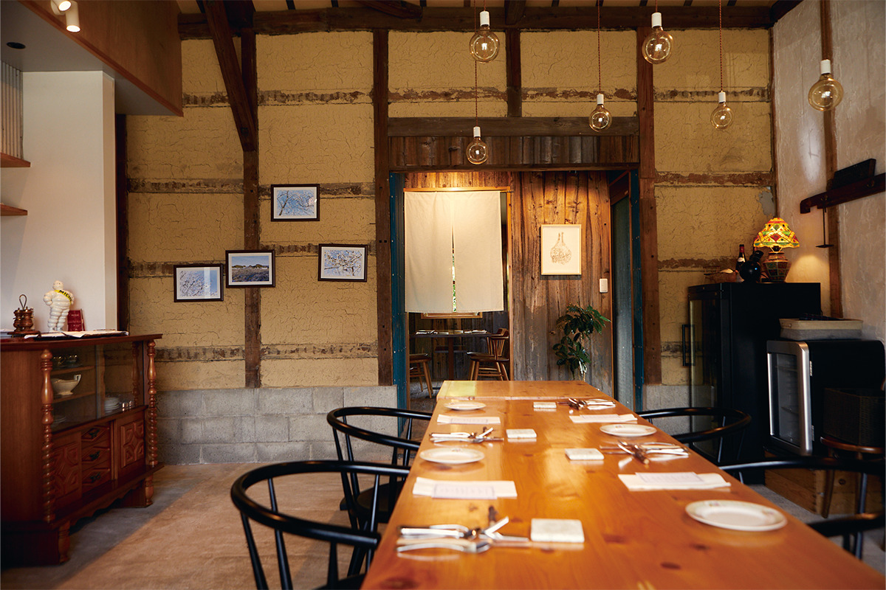
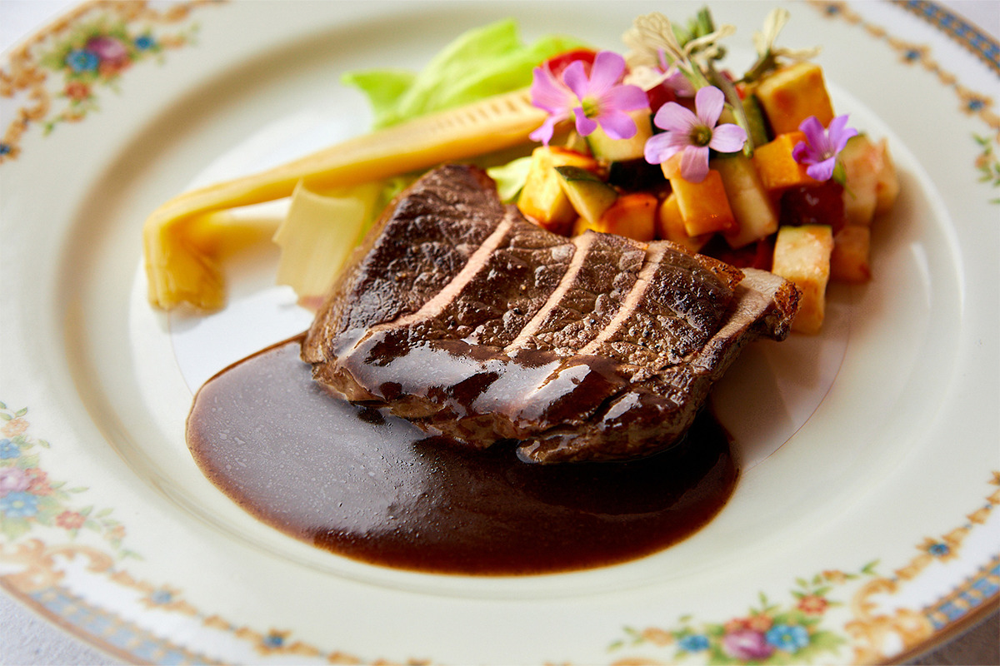
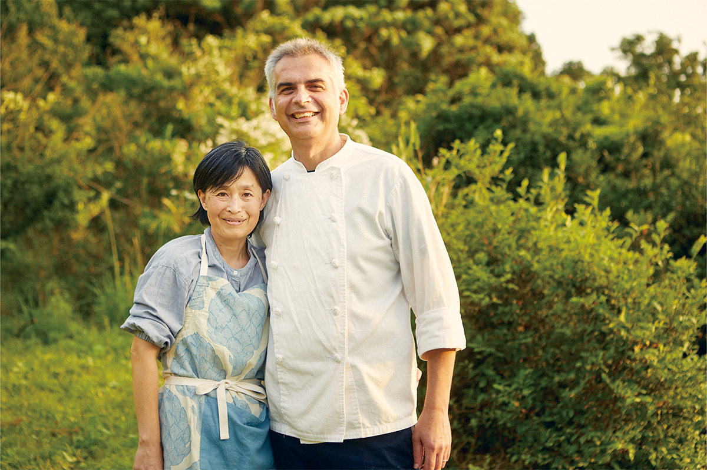
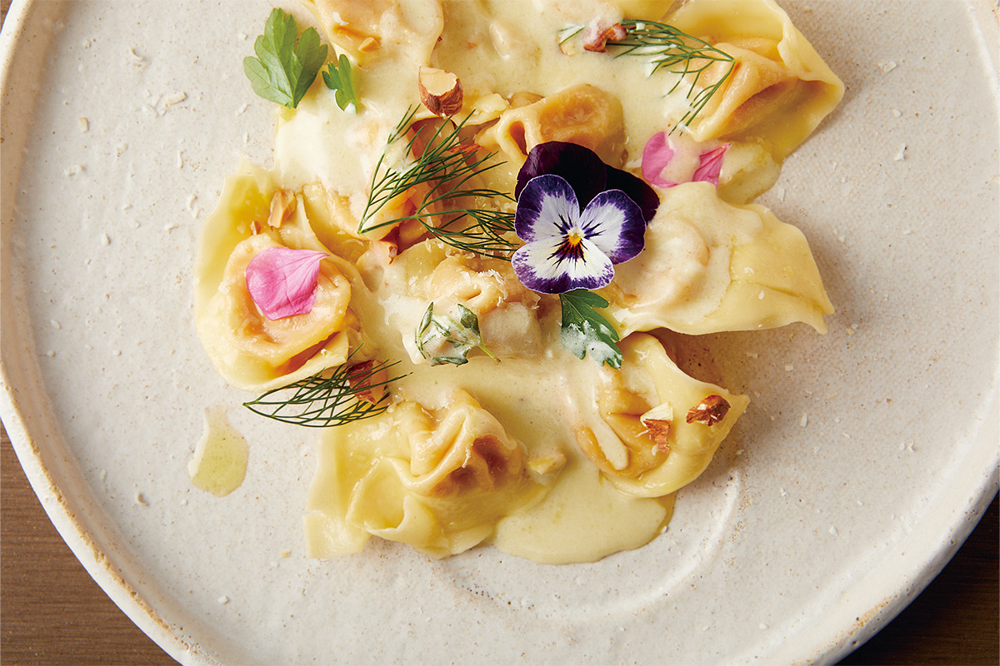
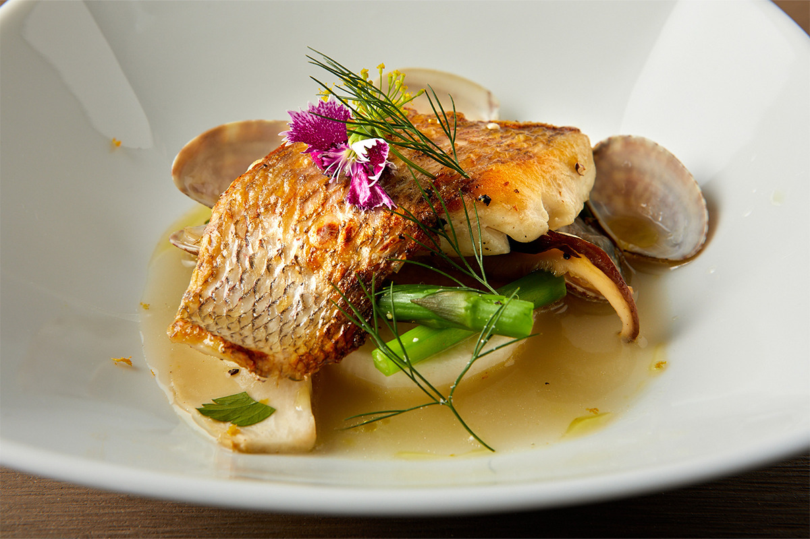
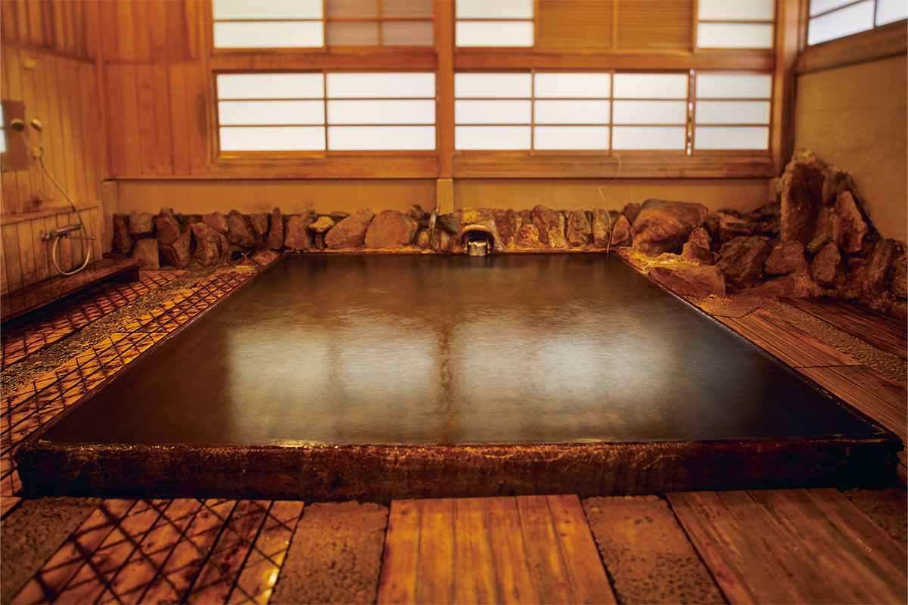
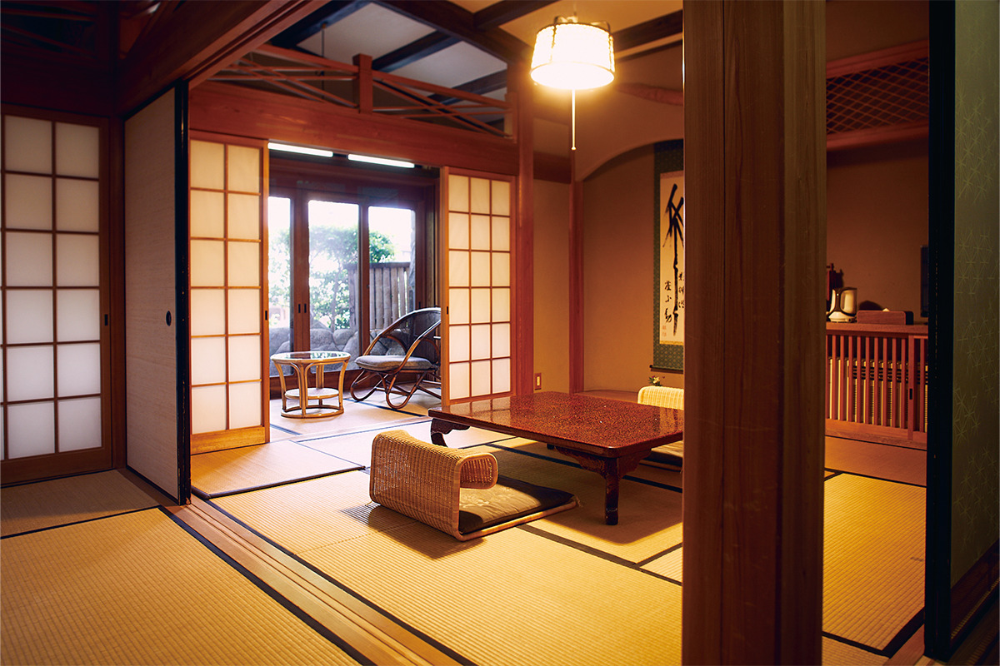
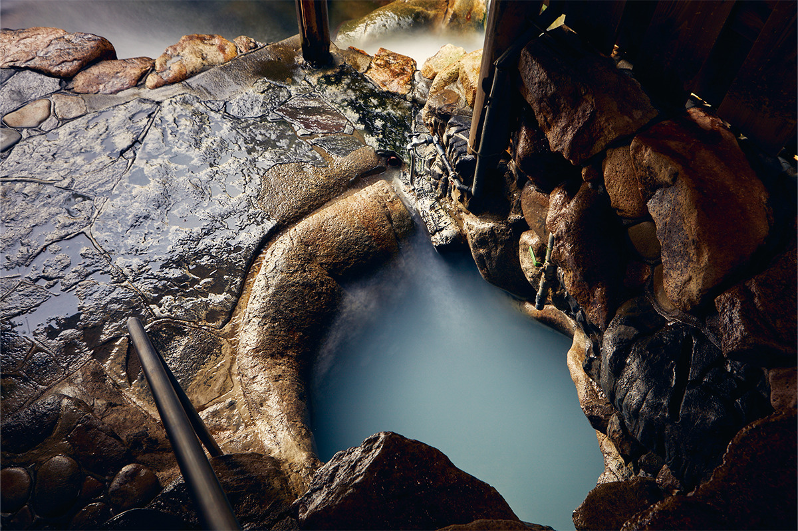

Префектура Вакаяма · Танабэ · еда и онсэны
Кути-Кумано: ужин у паломнической тропы и онсэн, которому 1800 лет

Перед тем как уйти в горы Кумано, паломники останавливались в Танабэ, чтобы как следует поесть. Город и сегодня хорошо кормит путника, а в конце дороги его ждёт горячий источник, который помнит средневековых пилигримов.
История
Последняя трапеза перед дорогой
Три великих святилища Кумано считают истоком японского поклонения природе. С эпохи Хэйан (794–1185) сюда шли как в «землю возрождения», и паломнические тропы Кумано-кодо до сих пор пересекают полуостров Кии. Город Танабэ стоит у входа в эти края, поэтому его называли Кути-Кумано, то есть «ворота Кумано». Здесь вырос город с постоялыми дворами, и, по преданию, паломники хорошо ели в Танабэ, прежде чем оставить мирскую жизнь позади.
Хорошие рестораны в окрестностях есть и сейчас, и маршрут по Кумано стоит начинать с них. А завершать его лучше в Юноминэ, онсэне с историей в 1800 лет, где можно смыть усталость долгой дороги.
Ресторан
«Караван-сарай»: дичь из соседних лесов
Ресторан «Караван-сарай» (Caravansarai) открыли в складе для слив умэ, которому около 50 лет. Сюда приезжают не только местные: ради здешней кухни гурманы едут издалека. Шеф-повар родом из этих мест, он учился ремеслу в отеле «Тэйкоку» в Токио и в известных французских ресторанах.
Он работает с сезонными местными продуктами, которые не попадают в обычную торговлю, и со свежей местной дичью. Ещё в годы учёбы шеф получил высшую награду на конкурсе блюд из дичи в категории оленины. Мясо он берёт на разделочном предприятии, с которым у ресторана договор, поэтому у дичи нет постороннего запаха. Французская техника здесь не спорит с продуктом, а раскрывает его, и такие блюда можно попробовать только в этом месте.

Ресторан стоит среди деревенских холмов Танабэ. Учтите, что в сезон сбора умэ, с конца мая до середины июля, он закрыт.
«Караван-сарай»
- Адрес
- префектура Вакаяма, Танабэ, Камихая, 595
- Телефон
- +81 739-33-9990
- Часы работы
- обед 11:30–14:00, ужин 17:30–21:00
- Выходные
- среда и четверг, сезон сбора умэ (с конца мая до середины июля)
Ужин
«Стол шефа Даля»: Италия в горах Танабэ

Этот гостевой дом с рестораном спрятан в горах, в районе Уэно города Танабэ. Повар родом из Италии приехал сюда жить, влюбившись в местную природу. Он готовит авторскую итальянскую кухню из сезонных продуктов округи и всего, что делает сам, а к ужину прилагается вид на горы.


Ужин начинается в 18:30, постоянных выходных нет, поэтому столик нужно бронировать заранее.
«Стол шефа Даля»
- Адрес
- префектура Вакаяма, Танабэ, Уэно, 641
- Телефон
- +81 80-4820-3473 (только по предварительной записи)
- Часы работы
- с 18:30
- Выходные
- нерегулярные, уточняйте при бронировании
Рёкан
«Адзумая»: купание без спешки
Юноминэ считается старейшим онсэном Японии, и улочки этого посёлка до сих пор хранят дух старого курорта. Один из самых известных здешних рёканов называется «Адзумая». Вода у него из трёх собственных природных источников.

Кроме купальни из кипариса хиноки здесь есть паровая баня на термальной воде: таких в Японии осталось всего несколько. Так что весь визит можно посвятить купанию. Ночь с ужином и завтраком стоила от 18 300 иен с налогом и сервисным сбором в 2024 году.

Рёкан «Адзумая»
- Адрес
- префектура Вакаяма, Танабэ, Хонгу, Юноминэ, 122
- Телефон
- +81 735-42-0012
- Цены / Вход
- ночь с ужином и завтраком от 18 300 иен (с налогом и сервисным сбором)
- Сайт
- adumaya.co.jp
Онсэн
«Цубо-ю»: купальня, где вернулся к жизни Огури Ханган
«Цубо-ю» это природная купальня в скале. Перед паломничеством в Кумано здесь совершали очищение водой и снимали усталость долгого пути. Это единственный общественный источник в списке Всемирного наследия, в котором можно искупаться. Говорят, вода в нём меняет цвет до семи раз за день.

Купальня крошечная, поэтому её занимают по очереди, по 30 минут. Взрослый билет стоил 800 иен, детский (до 12 лет) 400 иен в 2024 году.
«Цубо-ю», онсэн Юноминэ
- Адрес
- префектура Вакаяма, Танабэ, Хонгу, Юноминэ
- Телефон
- +81 735-42-0074
- Часы работы
- 6:00–21:00 (последний вход в 20:30), по очереди, по 30 минут
- Цены / Вход
- взрослые 800 иен, дети до 12 лет 400 иен
Фото: Кэндзи Окадзаки.